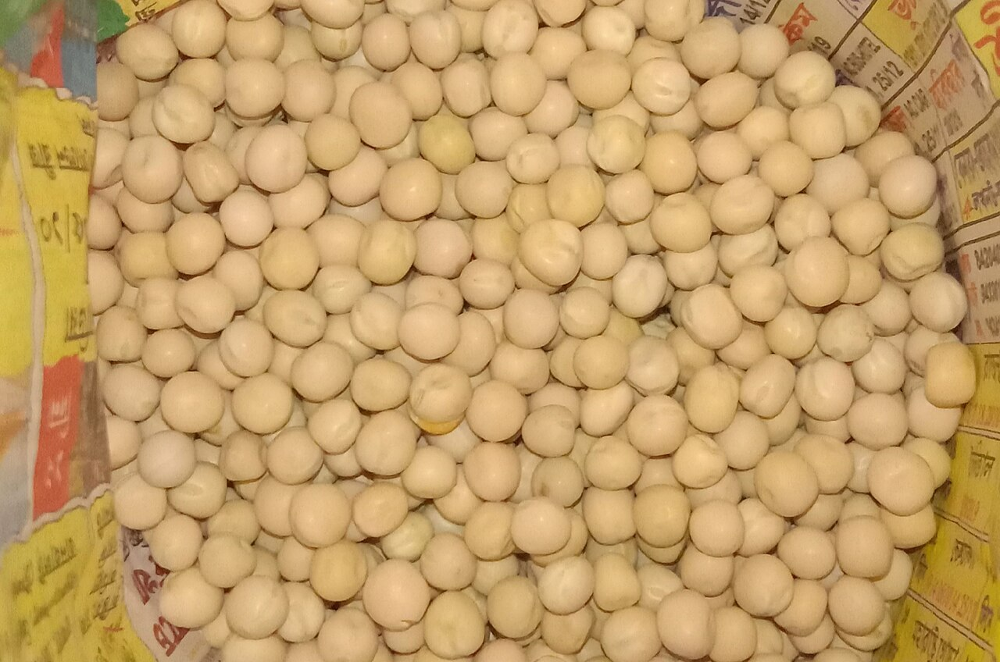

孟德尔的豌豆杂交实验（二）（上）：自由组合定律
本期导读
孟德尔的豌豆杂交实验（二）（上） · 9∶3∶3∶1

视频原话 · 导读3 句
- 同学们好！这节课梳理人教版必修二第一章第二节的上半部分——自由组合定律。7.8s
- 高考常考 9∶3∶3∶1 的由来、F2 中各类型的比例、测交验证和定律的实质。8.0s
- 我们按七个考点梳理，每个考点都讲清楚怎么考、怎么做。5.6s
两对相对性状实验01#
- 1F1全为黄色圆粒
- 2重组类型黄皱、绿圆（亲本没有）
- 3粒色黄∶绿 = 416∶140 ≈ 3∶1
- 4粒形圆∶皱 = 423∶133 ≈ 3∶1
考法
每对性状仍遵循分离定律；9∶3∶3∶1 ＝ (3∶1)2 的展开，说明两对性状的遗传互不干扰
视频原话5 句
- 考点一，两对相对性状的杂交实验。纯种黄色圆粒和纯种绿色皱粒杂交，F1 全是黄色圆粒。9.8s
- F1 自交，F2 出现四种表型：黄圆、黄皱、绿圆、绿皱，数量比接近 9∶3∶3∶1。9.5s
- 其中黄皱和绿圆是亲本没有的新组合，叫重组类型。5.4s
- 单独看每一对：黄∶绿 = 416∶140，圆∶皱 = 423∶133，都接近 3∶1。9.5s
- 考法：每对性状仍遵循分离定律；9∶3∶3∶1 就是 (3∶1) 的平方，说明两对性状的遗传互不干扰。10.5s
对自由组合的解释02#
- 1粒色 Y / y，粒形 R / r；P：YYRR × yyrr → F1：YyRr
- 2F1 形成配子时：每对遗传因子彼此分离，不同对的遗传因子自由组合
- 3受精时雌雄配子随机结合：4 × 4 = 16 种结合方式
F1 的配子：YRYryRyr= 1∶1∶1∶1
易错
16 是配子的结合方式，不是基因型种类；F2 基因型只有 9 种，表型 4 种
视频原话5 句
- 考点二，对自由组合现象的解释。粒色由 Y 和 y 控制，粒形由 R 和 r 控制，亲本是 YYRR 和 yyrr，F1 是 YyRr。16.5s
- F1 形成配子时，每对遗传因子彼此分离，不同对的遗传因子自由组合。7.1s
- 所以 F1 产生 YR、Yr、yR、yr 四种配子，比例是 1∶1∶1∶1。9.9s
- 受精时雌雄配子随机结合，结合方式有 4 × 4 = 16 种。6.4s
- 易错：16 是配子的结合方式，不是基因型的种类；F2 的基因型只有 9 种。7.5s
F2基因型与表型03#
♀ ♂
YR
Yr
yR
yr
YR
YYRR
YYRr
YyRR
YyRr
Yr
YYRr
YYrr
YyRr
Yyrr
yR
YyRR
YyRr
yyRR
yyRr
yr
YyRr
Yyrr
yyRr
yyrr
- 1黄圆 9/16Y_R_（双显性）
- 2黄皱 3/16Y_rr
- 3绿圆 3/16yyR_
- 4绿皱 1/16yyrr（双隐性）
- 5基因型 9 种纯合子 4 种共 4/16；YyRr 占 4/16
- 6黄圆中纯合子 YYRR 占 1/9
易错
重组类型看亲本：黄圆 × 绿皱 → 重组占 3/8；黄皱 × 绿圆 → 重组占 5/8
视频原话5 句
- 考点三，F2 的基因型和表型。用棋盘法把 16 种结合方式列出来。7.1s
- 表型 4 种：双显性黄圆占 9/16，黄皱和绿圆各占 3/16，双隐性绿皱占 1/16。9.8s
- 基因型 9 种：纯合子 4 种，各占 1/16，一共 4/16；双杂合子 YyRr 占 4/16。10.6s
- 黄色圆粒中，纯合子 YYRR 只占 1/9。6.0s
- 易错：重组类型要看亲本。亲本是黄圆和绿皱，重组类型占 3/8；亲本是黄皱和绿圆，重组类型占 5/8。11.8s
测交验证04#
| 实际 | 黄圆 | 黄皱 | 绿圆 | 绿皱 |
|---|---|---|---|---|
| F1 作母本 | 31 | 27 | 26 | 26 |
| F1 作父本 | 24 | 22 | 25 | 26 |
考法
测交证明 F1 产生了四种比例相等的配子，即形成配子时不同对的遗传因子自由组合
视频原话4 句
- 考点四，测交验证。让 F1 YyRr 与双隐性纯合子 yyrr 杂交。9.5s
- yyrr 只产生 yr 一种配子，所以测交后代的表型，就反映了 F1 产生的四种配子。10.1s
- 预期黄圆∶黄皱∶绿圆∶绿皱 = 1∶1∶1∶1。孟德尔做了正交和反交，结果都接近 1∶1∶1∶1。9.8s
- 考法：测交结果证明 F1 产生了四种比例相等的配子，也就证明了形成配子时不同对的遗传因子自由组合。10.5s
自由组合定律内容05#
控制不同性状的遗传因子的分离和组合是互不干扰的；
在形成配子时，决定同一性状的成对的遗传因子彼此分离，决定不同性状的遗传因子自由组合
时间
形成配子时
关系
分离与组合同时进行
对象
控制不同性状的遗传因子
易错
自由组合发生在形成配子时；受精时雌雄配子的随机结合不叫自由组合
视频原话4 句
- 考点五，自由组合定律：控制不同性状的遗传因子的分离和组合是互不干扰的。7.4s
- 在形成配子时，决定同一性状的成对的遗传因子彼此分离，决定不同性状的遗传因子自由组合。9.1s
- 分离和组合是同时进行的；自由组合的对象，是控制不同性状的遗传因子。7.2s
- 易错：自由组合发生在形成配子时，不是受精时雌雄配子的随机结合；受精时的随机结合不叫自由组合。10.1s
孟德尔成功的原因06#
① 选材
正确选用豌豆作实验材料
自花传粉、闭花受粉、性状易区分
② 由简到繁
先研究一对，再研究多对相对性状
③ 统计
对结果进行统计学分析
发现 3∶1、9∶3∶3∶1
④ 程序
科学设计实验程序：假说—演绎法
易错
孟德尔当时并不知道基因和染色体，他提出的是“遗传因子”
视频原话5 句
- 考点六，孟德尔获得成功的原因。第一，正确选用实验材料——豌豆。7.2s
- 第二，由一对相对性状到多对相对性状，从简单到复杂。5.7s
- 第三，对实验结果进行统计学分析。4.2s
- 第四，科学地设计了实验程序，运用了假说—演绎法。5.4s
- 考法：常以选择题出现。易错：孟德尔当时并不知道基因和染色体，他提出的是“遗传因子”。9.2s
遗传规律的再发现07#
- 1866 年孟德尔发表论文
- →1900 年三位科学家重新发现
- →1909 年 约翰逊提出“基因”、表型、基因型
| 概念 | 含义 |
|---|---|
| 表型 | 生物个体表现出来的性状（如高茎） |
| 基因型 | 与表型有关的基因组成（如 DD、Dd） |
| 等位基因 | 控制相对性状的基因（如 D 和 d） |
易错
表型 ＝ 基因型 ＋ 环境，基因型相同表型不一定相同；D 和 D 是相同基因，不是等位基因
视频原话4 句
- 考点七，孟德尔遗传规律的再发现。1866 年孟德尔发表论文，1900 年被三位科学家重新发现。10.3s
- 1909 年，丹麦的约翰逊把遗传因子改名为基因，并提出了表型和基因型的概念。8.1s
- 表型是生物个体表现出来的性状；基因型是与表型有关的基因组成；控制相对性状的基因叫等位基因。9.6s
- 易错：表型是基因型和环境共同作用的结果，基因型相同，表型不一定相同；D 和 D 是相同基因，不是等位基因。11.5s
易错速查✓
先自己判断，再点按钮查看对错与解析。
- 1F2 中重组类型一定占 3/8说法错误：亲本为黄皱 × 绿圆时，重组类型占 5/8
- 2F1 YyRr 产生的配子共有 16 种说法错误：雌雄配子各 4 种，结合方式 16 种
- 3自由组合发生在雌雄配子随机结合时说法错误：发生在形成配子时
- 4测交后代 1∶1∶1∶1，说明 F1 产生 4 种比例相等的配子说法正确。
- 5F2 黄色圆粒中，纯合子占 1/9说法正确。
- 6基因型相同的个体，表型一定相同说法错误：表型是基因型与环境共同作用的结果
两对性状拆开看，每对都是 3∶1！
视频原话 · 易错速查5 句
- 最后，用六道判断题检验一下。3.6s
- 判断一？错，亲本是黄皱和绿圆时，重组类型占 5/8。判断二？错，配子各 4 种，结合方式才是 16 种。12.3s
- 判断三？错，自由组合发生在形成配子时。判断四？对。7.4s
- 判断五？对。判断六？错，表型还受环境影响。6.5s
- 七个考点串成一条线：两对性状拆开看，每对都是 3∶1。我们下期再见！7.7s
图片来源
图片来源：Wikimedia Commons —— Billjones94《Raw (dried) yellow peas》CC BY-SA 4.0
Photo: Billjones94, CC BY-SA 4.0